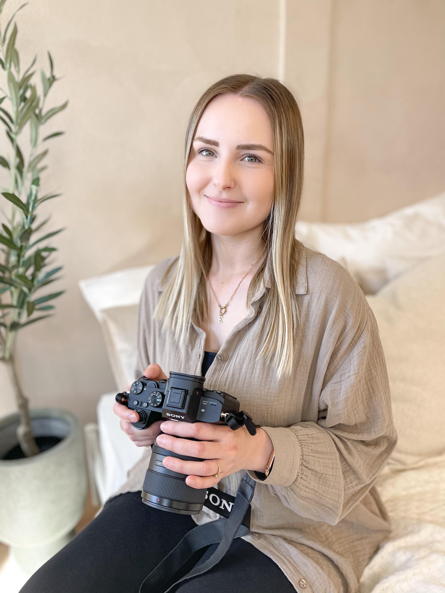

Ich bin 26 Jahre alt, verheiratet und Mama einer kleinen Tochter. Mein Hobby war schon immer die Fotografie, doch seit dem ich Mama bin, hat das einen noch höheren Stellenwert bekommen. Kinder werden viel zu schnell groß, deshalb muss jeder Moment festgehalten werden.
Und jetzt, würde ich gerne meine Leidenschaft mit euch teilen. Momente für die Ewigkeit festhalten. - das ist mein Ziel.
